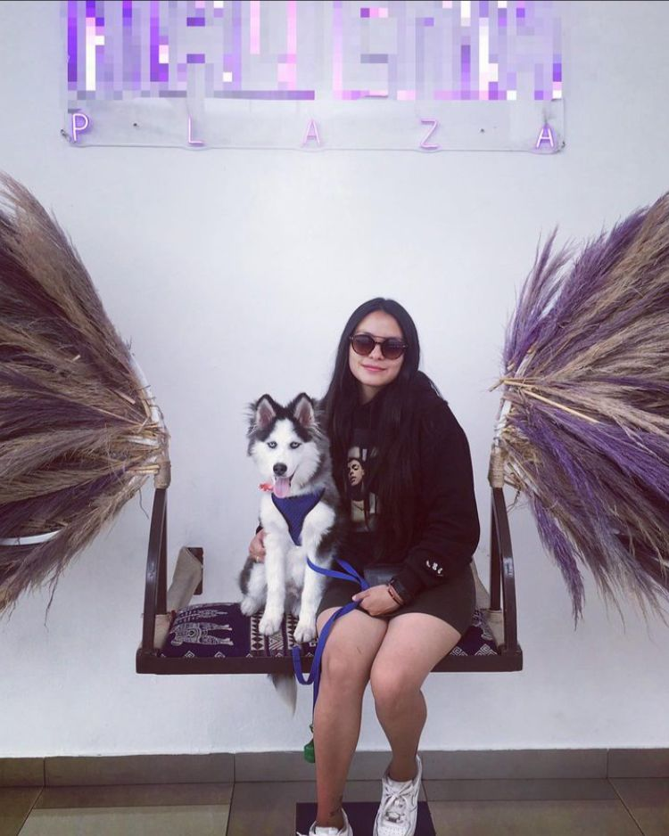

DRA. VALERIA LAICA
Medica veterinaria

Misión
Brindar un servicio de calidad a través de la actualización constante que demanda la medicina veterinaria y
fomentar el amor, cuidado y bienestar de las mascotas, garantizando una atención integral las 24 horas,
los 365 días del año.
Visión
Ser capaces de enfrentar y superar los retos de una profesión que cada día demanda más empeño, compromiso y sacrificio,
creando así un liderazgo en la atención veterinaria de las pequeñas especies.